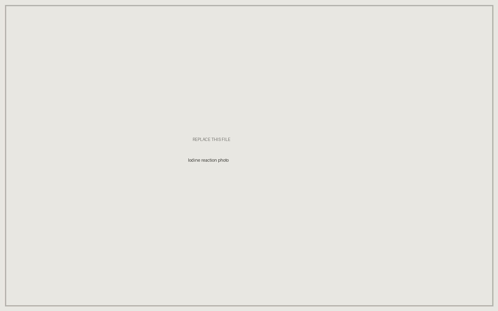

Chemical Engineering · Rose-Hulman Institute of Technology
Teddy Scharlotta
I'm a junior chemical engineering student at Rose-Hulman, concurrently enrolled in the Pre-Master's Track in Engineering Management. I work on materials and process development — taking a material system that doesn't have a procedure yet and turning it into something a team can make repeatably and measure.
Projects

Ceramic Matrix Composite Development
Built an end-to-end process for a high-temperature ceramic composite — the first ceramic parts produced in-house at the company.

Iodine Clock Calibration
More than 200 timed trials across five concentrations, reduced to a linear concentration–time calibration for the Chem-E-Car stopping mechanism.

Cold-Storage Shelving Design
Modeled, specified, and welded steel racking that converted a single-level prepreg freezer into full-height storage.
Skills
- Design of experiments & parameter studies
- Reaction kinetics and reproducibility analysis
- Composite layup, vacuum bagging, and cure
- Test plan development (flexural strength, porosity)
- Materials selection for service environment
- SketchUp solid modeling
- MIG welding and shop fabrication
- Excel data reduction and statistical analysis
Interests
I'm drawn to the part of chemical engineering that sits closest to the material itself — processing, characterization, and the loop between the two. Ceramic and polymer matrix composites are where I've spent the most time, and what interests me about them is that the property you care about is usually set during manufacturing rather than chosen from a datasheet. The engineering management coursework is there because I'd like to eventually run the kind of small development team I worked on this summer.